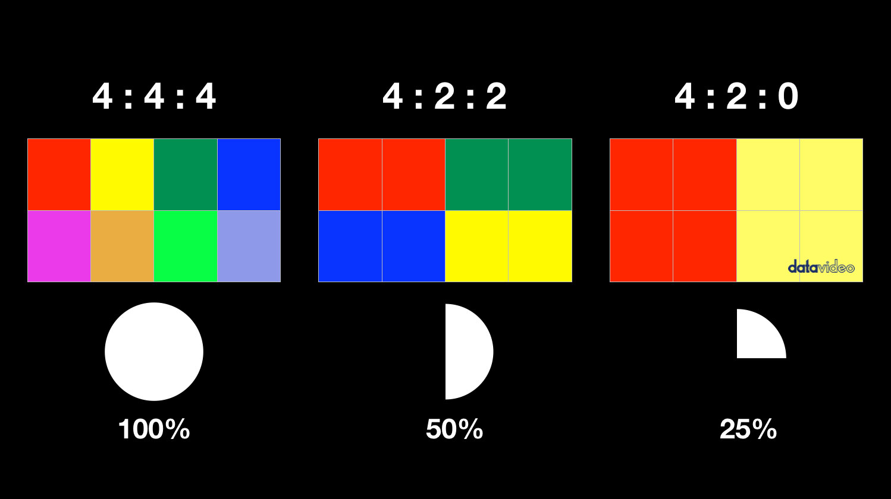

Audition video tutorials
here are some older video tutorials that may be helpful
project 1: event resources
let's make some sense of video formats, resolutions and settings
- Lumix s5ii and s5iix specs. Confusing but you should know:
- fps (i.e. 24, 30, 60 / 23.98, 29.7, 59.94)
- resolution: hd 1920x1080, 4k 3840x2160, 6k 5888x3312, open gate / 6k 3:2 5952x3968
- bitrate 100, 150, 200, 400 mbps
- codecs H.264 .mp4 vs H.265 HEVC
- chroma subsampling 4:4:4(none), 4:2:2(1/2), 4:2:0
- 
- longGOP vs all-intra see video (at least until 1:15)
- ProRes (S5iix only) ProRes Raw only available through HDMI Ninja monitor / recorder
composition resources
read / watch these compostion techniques
- 13 Camera Shots: Pond 5
- 9 Camera Shots: Vimeo
- Framing & Compostion: Vimeo
- Camera Movement Techniques: Videomaker
- 9 Camera Moves: Videomaker
common filming / editing mistakes / tips
- pans too fast (or too slow)
- do multiple takes. Only keep the good ones.
- shorten everything. More dynamic. Better
- simplify your compositions
- plan your "end shot" on any moving camera shots
- cold openers
- sequence settings
b-roll & cinematic
here are some helpful resources for editing
- video version of Pond 5 13 edits
- standard cut
- fade in/fade out
- jump cut
- montage
- cross dissolve
- wipe
- J/L cuts
- cutting on action
- cutaways
- cross cut parallel editing
- match cut
- smash cut
- invisible cut
- official blog post of 13 edits
- 13 edits from Pond 5 contributor
here are some helpful resources for editing
- video version of Pond 5 13 edits
- standard cut
- fade in/fade out
- jump cut
- montage
- cross dissolve
- wipe
- J/L cuts
- cutting on action
- cutaways
- cross cut parallel editing
- match cut
- smash cut
- invisible cut
- official blog post of 13 edits
- 13 edits from Pond 5 contributor
project 1: event
plan, shoot, edit and publish a video of an event
In addition to the standard deliverables you should also take into account the following:
- planning / shot list
- multiple cameras?
- multiple mics?
- establishing shot
- audience or participant reaction shots
- testimonial / interview (?)
- ambient sound
presentation due February 18 / 20
final due February 25 / 27
project 1: event exercises
1.1 composition
edit together 6 shots focussing on composition including framing and lighting (natural or lit or hybrid). Upload to YouTube or Vimeo and embed on your page.
pages MUST be located at /video2/ (and as you know must be "index.html")
due February 4 / 6
1.2 audio
record 6 scenes with different types of audio, edit the audio
- ambient sounds with camera / phone mic, on-camera mic, other mic
- voice with camera / phone mic, on-camera mic, lav mic
you should edit your audio:
- remove problems (spectrum analyser)
- reduce noise (low & high pass??)
- normalize to -3db (voice) or -6db (ambient)
due February 4 / 6
1.3 b-roll
have some fun with slow motion, camera movement & lighting to create 6 short b-roll sequences
due February 11 / 13
What do you want to do this semester?
My idea is that you shoot a lot of material and edit it. Many of you, it seems, have not shot much material since first semester. What do you think?
We have acquired some great new gear to make sharing your stories easier:
- 4 full-frame, mirroless cameras (2 Lumix s5iix & 2 s5ii)
- lights, lots of light & stands and stuff
- microphones and field recorders (3 sets of wireless lav mics, 2 lav mics, 3 field recorders (Zoom H1, H4N Pro, H5)
- 2 DJI phone gimbals, a bunch of phone holders / tripods
Also, I would like to focus on getting good sound for your videos. Ideally you will use microphones in the field to record ambient, voice and maybe even music. And use a DAW (digital audio workstation) such as Adobe Audition process your recordings.
proposed projects
here is what I suggest, but am open to your input
- background looping video(s) for your websites / portfolios
- an event video (like a live event)
- special collaborative project with first & third-year students
- an interview / interviews
- a personal project (story narrative)
deliverables
for the main projects, I propose the following deliverables
video 2 websites MUST be located at video2/
- Capyskills journal (see details)
- project brainstorming & description (Figma?)
- project plan including (as appropriate):
- moodboard / storyboard / script
- shot list / set plan / properties list
- calendar / timeline
- draft version with feedback
- final version including: (dropped in shared OneDrive folder)
- title sequence
- credits for you / content creators
- credits for any media / resources you used
- web page with:
- title
- description with challenge / client brief
- optional: sharing process with storyboards / scripts etc
- final work
- summary with feedback / result etc
background, looping video
shoot some video(s) edit & format for use as a background, looping video.
Your loop should smooth, so that the start & stop is not apparent. You can use a number of techniques but essetially the first and last frames should be identical (or nearly identical):
- a static scene with subjects entering / exit the scene
- perfectly repeating movement
- something that passes in front of the camera obscuring the background
- camera movement the hides the edit
- multiple scenes
- a combination of above